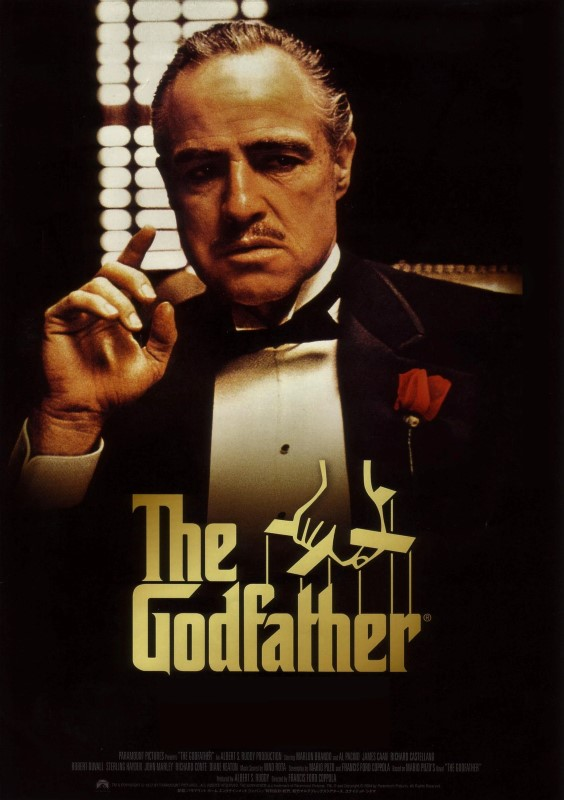

The Godfather


"The Godfather", estrenada en 1972, es considerada una de las mejores películas de la historia del cine. Dirigida por Francis Ford Coppola y basada en la novela de Mario Puzo, la película sigue la historia de la familia criminal Corleone y su líder, Don Vito Corleone, interpretado magistralmente por Marlon Brando.
La película es un drama épico que aborda temas como la lealtad familiar, la moralidad, el poder y la corrupción. La actuación de todo el elenco es excepcional, con Brando, Al Pacino, James Caan y Robert Duvall entregando interpretaciones memorables. La dirección de Coppola es impecable, creando una atmósfera inmersiva y una narrativa fascinante.
La cinematografía de Gordon Willis es impresionante, con una paleta de colores sombríos que reflejan perfectamente la oscuridad y complejidad de la historia. La icónica banda sonora de Nino Rota agrega un componente emocional adicional a la película.
"The Godfather" ha sido elogiada por su guion brillante, su desarrollo de personajes profundo y su representación magistral de la mafia italiana en Estados Unidos. La película ha dejado una huella indeleble en la cultura popular y continúa siendo una referencia obligada en el mundo del cine.
En resumen, "The Godfather" es una obra maestra del cine que sigue siendo relevante y cautivadora más de cuatro décadas después de su estreno. Una película que merece ser vista y apreciada por su riqueza cinematográfica y su impacto cultural.